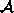
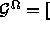
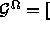
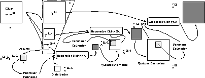
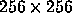

is the noisy (due to ) and
blurred (due to ) image that is input to the restoration algorithm.
The restoration algorithm produces the restored or the estimate
, of the unobservable, undistorted image
is the noisy (due to ) and
blurred (due to ) image that is input to the restoration algorithm.
The restoration algorithm produces the restored or the estimate
, of the unobservable, undistorted image  .
.
The art of being wise is the art of knowing what to overlook - William James
Image restoration is a vision task concerned with estimation of uncorrupted images from noisy, blurred ones. The noise and blur might be caused by optical distortions, object motions during imaging or atmospheric turbulence. The goal of image restoration is to recover the original scene from its degraded observations. Image restoration techniques are oriented towards modeling the degradations, and applying an inverse procedure to obtain an approximation of the original scene.
Figure 1.1: The image restoration problem.
Figure 1.1 illustrates the components of
image restoration problem. is the noisy (due to ) and
blurred (due to ) image that is input to the restoration algorithm.
The restoration algorithm produces the restored or the estimate
, of the unobservable, undistorted image .
The problem of image restoration has been extensively studied for its
practical as well as theoretical importance. Literature on this subject
is abundant and varied since the problem arises in almost all branches of
engineering and applied physics [1]. In this chapter, the
color image
restoration problem is formulated in the generalized modular integration
and multiresolution framework developed in Chapter  . We
model the color image to be a MRF and hence the
problem of color image restoration essentially involves two modules: (i)
module for
estimation of parameters associated with the image being modeled as a MRF
and (ii) image restoration, which makes use of parameters estimated in
module (i). The parameters which describe the MRF model at each
resolution are computed using the homotopy continuation method
[2,3]. The color image restoration, then involves
the construction and minimization of an energy function which is a
function of the parameters estimated by the parameter estimation module.
The constructed energy function when minimized yields the required
restored image.
. We
model the color image to be a MRF and hence the
problem of color image restoration essentially involves two modules: (i)
module for
estimation of parameters associated with the image being modeled as a MRF
and (ii) image restoration, which makes use of parameters estimated in
module (i). The parameters which describe the MRF model at each
resolution are computed using the homotopy continuation method
[2,3]. The color image restoration, then involves
the construction and minimization of an energy function which is a
function of the parameters estimated by the parameter estimation module.
The constructed energy function when minimized yields the required
restored image.
The layout of this chapter is as follows: In Section 1.2
we introduce the color image restoration problem and review related
literature in Section 1.3. In Section
1.4, we formulate the problem of color image restoration
in the framework of modular integration and multiresolution, developed in
Chapter . The task of color image restoration in this
framework reduces to solving two subtasks, namely the restoration task
(Section 1.4.1) and the parameter estimation task (Section
1.4.2). The proposed scheme of parameter estimation
and image restoration is sketched in Section 1.5.
We validate the use of the proposed framework (modular integration and
multiresolution) through experimental results in Section
1.6. Finally we conclude and give directions for further
research in Section 1.7.
Image estimation from images degraded by noise and image capturing
nonlinearities (see Figure 1.1) is one of the
important early vision problems addressed richly in literature for
monochrome images, but not so much for color images. The main reason for
going in for image restoration is to take care of the imaging system
imperfection which introduce degradations and which in turn results in
imperfect reproduction of the original scene [4]. These
degradations can be classified as spatial (blur) and point degradations
(system non-linearities and observation noise) [5]. Blurring
can be attributed to attenuation of certain frequencies in the spectral
content of the image. Each component of the imaging system (lens, sensor,
digitizer) contributes to blurring. The most common types of noise that creep into the imaging
process are (i) electronic (arises from thermal motion of electrons in
electronic components and also from quantization during image
digitization), (ii) photo electric noise (due to statistical nature of
light and the photo electric conversions process in the image sensor),
(iii) film grain noise (due to randomness in the silver halide grains in
the film that records the image) and (iv) quantization noise. In addition
to all this, most image sensors and scanners have known non-linear
input-output characteristics which can be represented as point
non-linearities. The goal of image restoration is to recover the original
2D image, , from the degraded observation  .
We cite below a few examples when restoration can be used.
.
We cite below a few examples when restoration can be used.
With advances in digital TV and video systems, a renewed interest has emerged, that of processing color images and even generally that of processing multichannel images i.e. satellite images. Color images other than being pleasing to the human eye, convey valuable information about the objects in a scene and this information can be used effectively to enhance the performance. In fact, color images carry information in addition to the intensity (which is the only cue embedded in a monochrome image) in the form of hue and saturation. The extra cues help in distinguishing objects in an image which may not be possible in a monochrome image. Despite this, color image processing is relatively nascent, at least when compared to gray or monochrome image processing [6].
There have been studies in color perception [7], color models [8,9], on the use of color in computational vision [10,11,12,13], and image understanding [14,15]. Recent studies focus on devising various strategies and methodologies in the context of color image processing (for example see [16,17,18,19]).
In early studies on color image restoration, each channel of the color image was considered to be a monochrome image in itself. Thus the technique for monochrome images was applied on each channel separately [20,21]. The approach ignored the multichannel nature of the color images and assumed channel independence. This assumption is not valid because there are inter-channel correlations in color images [6]. These correlation carry additional information which can be taken into account in the restoration process.
Hunt and Kubler [22] present a multichannel restoration method by assuming that the autocorrelation function is separable into spectral and spatial components. They use the Karhunen-Loeve transformation to decorrelate the three components and apply monochrome techniques in order to restore each channel independently in the KL domain.
Galatson and Chin [17] and Angelopouls and Pitas [23] independently present an interesting restoration method based on multichannel techniques. The proposed technique requires the inversion of a huge matrix, they propose and develop an iterative technique.
Color image restoration has been used for restoring old color images [24,25] and more so in astronomical image processing. Zhu et al [26] use multichannel images which are obtained by imaging the same scene using multiple sensors. Here, they use deterministic multichannel filters that do not utilize any prior knowledge about the multichannel image and the noise. Regularization, based on the multichannel Cross-Validation function is used to obtain these filters. A method to restore faded color materials by digital image processing is presented in [27]. The algorithms used for reconstruction are based on photographic experiments, namely, on accelerated fading tests of various photographic materials. The densities of the original and the faded materials are measured. Based on this data, a mathematical model for fading is described by a linear equation. The faded image is digitized using a scanner of high spatial and photometric resolution. For good spectral resolution, channel separations are done with narrow-band interference filters. The original colors are reconstructed by applying the inverse of the fading equation. The corrected image is exposed with a high-resolution film recorder on color film. This method has been applied for color slides, prints, and 16 mm movies.
Prades et al [28] apply the maximum likelihood estimator (MLE) method to restore scanned photogrammetric plates. In color images, the restoration is carried out separately for each band. To compute the MLE solution, they use the algorithm based on the expectation maximization (EM) algorithm for Poisson data. Several small sized images are taken and the convolution function transforming the original into the restored image is calculated in Fourier space, thus obtaining a convolution matrix when returning to normal space. Next, this matrix is truncated and a convolution is performed over the whole image.
In this thesis, we formulate the problem of color image restoration in the
generalized modular integration and multiresolution framework developed in
Chapter . We assume the color image to be modeled as a
Markov Random Field (MRF). We restrict our color
image restoration to additive noise model, namely  ,
because the main emphasis in this chapter is to formulate the problem of
color image restoration in the developed modular integration and
multiresolution framework and to demonstrate the usefulness and
applicability of the framework. As discussed earlier, the knowledge of
the variation of the attributes of interest over resolutions is important.
This is because their knowledge is useful for passing the variable of
interest from coarse to fine resolution. For the additive
noise case, the attribute of interest, namely, a at a coarser resolution is
quadtree interpolated and passed on to the next fine resolution, however
the passing of the attribute of interest from coarse to the next fine
resolution is not straightforward when we consider the degradation model
,
because the main emphasis in this chapter is to formulate the problem of
color image restoration in the developed modular integration and
multiresolution framework and to demonstrate the usefulness and
applicability of the framework. As discussed earlier, the knowledge of
the variation of the attributes of interest over resolutions is important.
This is because their knowledge is useful for passing the variable of
interest from coarse to fine resolution. For the additive
noise case, the attribute of interest, namely, a at a coarser resolution is
quadtree interpolated and passed on to the next fine resolution, however
the passing of the attribute of interest from coarse to the next fine
resolution is not straightforward when we consider the degradation model
 . In Appendix we derive the
behavior of this degradation model over scales.
. In Appendix we derive the
behavior of this degradation model over scales.
The task of color image restoration would involve (i) choosing an appropriate color coordinate system, (ii) choosing a suitable degradation model and (iii) modeling the image.
There are several color coordinate systems that have come into existence because of one reason or the other [6]. A few color coordinate systems that are generally used in color image processing are listed in Table 1.1.

Table 1.1: Color coordinate systems
([29,6,15])
The choice of the color coordinate system depends on the application. Based on various experiments performed with color differencing schemes [30,31], for color image restoration we conclude that the RGB and , , (Ohata et al [32]) color coordinate systems are best suited for color image restoration.
In this thesis, an additive noise degradation model () is
considered and the image is modeled as a Markov Random Field (MRF). We
formulate the problem of color image restoration in the generalized
modular integration and multiresolution framework developed in Chapter
. Table 1.2 depicts the problem of color
image restoration as seen in the generalized framework. Now, the problem
of color image restoration becomes one of (i) estimating the parameter
associated with (a) the clique potentials coming from the imposed assumption
of MRF model on the image, (b) the noise variance associated with the
additive noise model and (ii) restoring the image. The color image
restoration problem can be stated as:
Given the observed image at resolution k and the degradation modelThe splitting of the problem and then recursively estimating the required attributes was suggested by Wendell and Horter [34] and is called partial optimal solution.. Find the optimum parameter and restored image pair (
) such that
Both and need to be estimated to satisfy the optimality criterion of (1.1). It is difficult to find the optimum pair (
) [33], and hence this problem is tackled by splitting the problem into two problems, namely,
Table: Color image restoration in the generalized framework perspective
developed in Chapter .
In this thesis, color image restoration is posed as a maximum a posteriori (MAP) estimation problem and the constructed energy function is minimized using the simulated annealing algorithm. The parameter estimation problem is solved using the homotopy continuation method along the lines of [3].
Let , , be the actual image to be restored, the
observed image and the noise field respectively at resolution k, defined
on a square lattice of size ,
Let = +  for be the degradation model. We can write the degradation
model in the vector form by stacking the rows of the image in
lexicographical order as
for be the degradation model. We can write the degradation
model in the vector form by stacking the rows of the image in
lexicographical order as  =
=  + . Here, the color
image
+ . Here, the color
image  consists of three components,
consists of three components,  = [ ,
, , corresponding to the three components of a
color coordinate system, for example
= [ ,
, , corresponding to the three components of a
color coordinate system, for example  could correspond to red,
could correspond to red,
 to green and
to green and  to blue in the RGB color coordinate
system. Each pixel (q=1,2,3) takes a value from a finite
set and ,
, . We make the following assumptions:
to blue in the RGB color coordinate
system. Each pixel (q=1,2,3) takes a value from a finite
set and ,
, . We make the following assumptions:
 and
and  belonging to
belonging to  , where
, where
The image  is modeled as a MRF. Using the MRF-Gibbs equivalence
relation we can express the a priori probability density function of
is modeled as a MRF. Using the MRF-Gibbs equivalence
relation we can express the a priori probability density function of
 as a Gibbs distribution [35,36], thus
as a Gibbs distribution [35,36], thus
where, is the partition function, and is the energy function
represents the set of all possible cliques,
is the clique potential which maps the local interactions of the elements
of the clique c to the energy contributed by the clique towards the
total energy. This, in fact, encodes the a priori knowledge about the spatial
dependence of the pixel with the neighboring pixels. is the set
of clique parameters, and is a realization of  . In
particular, we consider the energy function
. In
particular, we consider the energy function
where, represents the clique parameters, and represents the norm. In our simulations we have used,
Though the description given here is applicable to any color coordinate
system (see Table 1.1), we consider the RGB color coordinate
system for the purpose of simulations.
In (1.4),  and
and  are the
the vertical and horizontal line fields defined as:
are the
the vertical and horizontal line fields defined as:

In our simulations we use,
This amounts to deciding the presence or absence of the line field
depending on  (see Table 1.1). In fact the interaction
between the three components, RGB, of the image is through this. Using the
Bayes rule, the assumption that the noise is Gaussian distributed and the
fact that noise is independent of the image, the posterior energy
function (see Appendix ) can be shown to be
[36,37]
(see Table 1.1). In fact the interaction
between the three components, RGB, of the image is through this. Using the
Bayes rule, the assumption that the noise is Gaussian distributed and the
fact that noise is independent of the image, the posterior energy
function (see Appendix ) can be shown to be
[36,37]
where,
and are the unknown parameters that have to be estimated. If the parameters are known, restoration is achieved by minimizing with respect to which would be a MAP estimation problem, namely
Of the estimated attributes , would be the restored image or the attribute of interest.
The posteriori energy function (1.6) is a function of
the clique parameters and
the noise variance  (substitute (1.4) in
(1.6)). The choice of the parameters are crucial for the
construction and minimization of the energy function and hence the
parameters need to be estimated.
The parameter estimation problem can be stated as:
(substitute (1.4) in
(1.6)). The choice of the parameters are crucial for the
construction and minimization of the energy function and hence the
parameters need to be estimated.
The parameter estimation problem can be stated as:
where,  is the optimal restored image obtained at the resolution
k. The conditional probability
can be expressed as
is the optimal restored image obtained at the resolution
k. The conditional probability
can be expressed as
It can be shown that [2],
which implies
In (1.9) the summation is over all possible realizations of
 . Thus, from a computational standpoint, handling (1.9)
would be practically impossible, because this requires
. Thus, from a computational standpoint, handling (1.9)
would be practically impossible, because this requires  computations, where G (typically 256) represents the number of possible
gray values and
(typically 256) represents the size of the square image and the
number 3 is due
to the 3 color components. One can view (1.9) as a likelihood
function to be maximized for estimating . To overcome the
computational complexity and to make the parameter estimation problem
tractable, (1.9) is approximated using a conditional
pseudolikelihood function, (analogous to Besag [38]) as
computations, where G (typically 256) represents the number of possible
gray values and
(typically 256) represents the size of the square image and the
number 3 is due
to the 3 color components. One can view (1.9) as a likelihood
function to be maximized for estimating . To overcome the
computational complexity and to make the parameter estimation problem
tractable, (1.9) is approximated using a conditional
pseudolikelihood function, (analogous to Besag [38]) as
where, represents the neighborhood of the site  . The
conditional probability
can be expressed as
. The
conditional probability
can be expressed as
The notation denotes the set of all possible i,j pixel locations that fall into the clique . The derivation of (1.11) can be found in [37]. Since we can rewrite the exponential in the denominator of (1.11) as a product of 3 exponentials, each requiring computations, corresponding to the 3 color components, the computationally complexity now is . For the typical values of , we have a reduction in the computation complexity by a factor of .
The numerical update equation for a homotopy map can be derived as
shown in Appendix to be
Here, , where
 is the Jacobian of the selected homotopy map and
is the homotopy parameter (please see Appendix
).
is the Jacobian of the selected homotopy map and
is the homotopy parameter (please see Appendix
).
Observe, that in the problem formulation parameter estimation and image
restoration schemes we have assumed to be a MRF.
Though not explicitly stated, the MRF structure has been assumed to be
retained at all coarse resolutions as well. The assumption may not be
true in general, this fact has been shown in case of the case of
Gaussian-MRF by Lakshmanan and Derin [33]. Appendix
discusses the problem of approximating
MRF over multiple scales, where we learn the MRF models at each
resolution.
The proposed scheme of parameter estimation and color image restoration is pictorially depicted in Figure 1.2. The description of the scheme is based on Figure 1.2.

Figure 1.2: The parameter estimation and restoration scheme.
 (Figure 1.2 component a) and the degradation
model . Estimate
(Figure 1.2 component a) and the degradation
model . Estimate
 ,
(Figure 1.2 component c). The
basis for this assumption arises from the observation that the Gaussian
pyramid construction is essentially a low pass filtering scheme and if we
go sufficiently down the pyramid, then the high frequency noise would be
filtered out. In practice, it is found that a SNR of dB at a
resolution increases to dB at resolution .
,
(Figure 1.2 component c). The
basis for this assumption arises from the observation that the Gaussian
pyramid construction is essentially a low pass filtering scheme and if we
go sufficiently down the pyramid, then the high frequency noise would be
filtered out. In practice, it is found that a SNR of dB at a
resolution increases to dB at resolution .
 and
estimate the parameters
by minimizing (1.11) using the homotopy continuation method
(Section 1.4.2).
and
estimate the parameters
by minimizing (1.11) using the homotopy continuation method
(Section 1.4.2).
 , : Choose a portion of the image
which is sufficiently rich in information equal to the
size of the coarsest image, namely, .
Estimate the parameters
by minimizing (1.11) using the homotopy continuation method (Section
1.4.2).
, : Choose a portion of the image
which is sufficiently rich in information equal to the
size of the coarsest image, namely, .
Estimate the parameters
by minimizing (1.11) using the homotopy continuation method (Section
1.4.2).
 : Initialize to zero
and minimize the posteriori energy function (1.7)
using the simulated annealing algorithm (Section 1.4.1).
: Initialize to zero
and minimize the posteriori energy function (1.7)
using the simulated annealing algorithm (Section 1.4.1).
 and minimize the posteriori energy function
(1.7) using the simulated annealing algorithm
(Section 1.4.1).
and minimize the posteriori energy function
(1.7) using the simulated annealing algorithm
(Section 1.4.1).


Experiments were carried out on real color images to validate the
proposed modular integration and multiresolution framework developed
in Chapter , to solve the problem of color image
restoration. The experiments were carried out as sketched in Section
1.5.
Figure 1.3: Parameter estimation and color image restoration in a
multiresolution framework, (a) the original image, (b) additive noise
degraded image (SNR = 15.211 dB)and (c) restored image in a multiresolution
framework (SNR = 17.511 dB).
Figure 1.3a is the original color image of a scene of size
 and Figure 1.3b is the noisy
image with a SNR of 15.211 dB. The coarsest image of the constructed
Gaussian pyramid was of the size (). The clique
and noise parameters obtained at each resolution have been tabulated in
Table 1.3a. Figure 1.3c shows the restored
image obtained using the parameters as shown in Table 1.3a.
The SNR of the restored image and the number of iteration per resolution
are given in 1.3b. It can be observed that the noise
parameter at the finest resolution is in tune with the
 that would generate the corresponding noisy image (Figure
1.3b) with SNR of 15.211 dB. Though nothing can be
said explicitly regarding the correctness of the clique parameters , the improvement in the SNR obtained as a result of application of
the proposed scheme is an indication of the correctness of the estimated
parameters.
that would generate the corresponding noisy image (Figure
1.3b) with SNR of 15.211 dB. Though nothing can be
said explicitly regarding the correctness of the clique parameters , the improvement in the SNR obtained as a result of application of
the proposed scheme is an indication of the correctness of the estimated
parameters.
Table: Parameter estimation and color image restoration (a) Parameters
estimated and used for restoring images at each resolution (Figure 1.3 ), and (b)
the SNR of the noisy and restored image.
Figure 1.4: Parameter estimation and color image restoration in a
multiresolution framework,
(a) the original image, (b) additive noise degraded image (SNR = 15.129
dB)and (c) restored image in a multiresolution framework (SNR = 17.696 dB).
Figure 1.4 shows the second set of experimental results.
The original image is shown in Figure 1.4a. The SNR of the
additive noise degraded image is dB and is shown in Figure
1.4b. The parameters used for restoring image at each
resolution are given in Table 1.4a and SNR of the restored
image is given in Table 1.4b. Again the estimated  at the finest resolution
at the finest resolution  is close to the
is close to the  which would
produce the noisy image shown in Figure 1.4b.
which would
produce the noisy image shown in Figure 1.4b.
Table: Parameter estimation and color image restoration (a) Parameters
estimated and used for restoring images at each resolution (Figure 1.4 ), and
(b) the SNR of the noisy and restored image
Figure 1.5: Parameter estimation and color image restoration in a
multiresolution framework,
(a) the original image, (b) additive noise degraded image (SNR = 15.027
dB)and (c) restored image in a multiresolution framework (SNR = 17.218 dB).
Figure 1.5 shows the third set of experimental results obtained using the modular integration and multiresolution framework. Figure 1.5a is the original color image of a scene (). Figure 1.5b is the additive noise degraded image with a SNR of dB. The restored image has a SNR of dB and is shown in Figure 1.5c. The parameters estimated and used for the purpose of restoration are tabulated in Table 1.5a and the SNR of the restored image and the number of iteration per resolution are given in Table 1.5b.
Table: Parameter estimation and color image restoration (a) Parameters
estimated and used for restoring images at each resolution (Figure 1.5 ), and
(b) the SNR of the noisy and restored image
Figure 1.6: Parameter estimation and color image restoration in a
multiresolution framework,
(a) the original image, (b) additive noise degraded image (SNR = 15.056
dB)and (c) restored image in a multiresolution framework (SNR = 18.219 dB).
The last set of results for the scene image is shown in Figure
1.6. Figure 1.6a is the original color image
of size  and Figure 1.6b is the noisy image
with a SNR of dB. The coarsest image that was considered was of
size
and Figure 1.6b is the noisy image
with a SNR of dB. The coarsest image that was considered was of
size  . The parameters estimated at each resolution are
depicted in Table 1.6a. Table 1.6b gives the
SNR of the restored image and the number of iterations taken for each
resolution. There is a dB improvement in the SNR.
. The parameters estimated at each resolution are
depicted in Table 1.6a. Table 1.6b gives the
SNR of the restored image and the number of iterations taken for each
resolution. There is a dB improvement in the SNR.
Table: Parameter estimation and color image restoration (a) Parameters
estimated and used for restoring images at each resolution (Figure 1.6 ), and
(b) the SNR of the noisy and restored image
In all our experiments homotopy continuation method was used to estimate the parameters [2] and simulated annealing algorithm was used for minimizing the a posteriori energy function . The initial temperature in the simulated annealing algorithm was fixed at and an inverse log cooling schedule was used. The simulated annealing was iterated for a fixed number of iterations numbering 250.
The developed framework of modular integration and multiresolution to
solve vision tasks is demonstrated for the vision task of color image
restoration. The parameter estimation module for MRF parameter estimation
and color image restoration have been integrated in a multiresolution
framework. Homotopy continuation method as proposed in [2]
has been used for the purpose of parameter estimation and simulated
annealing algorithm has been used for minimizing the energy function
associated with the color image restoration. The applicability and
usefulness of the proposed framework as applied to color image restoration
has been demonstrated for an additive noise degradation model through
experimental results. The proposed algorithm is computationally faster
because of the multiresolution framework. The reduced size of the image
(size of the coarsest image, in our simulations instead of
 ) used for parameter estimation contributes to a
significant reduction of the computational time. In addition a good
initial estimate at fine resolutions coming from the estimated image at
the coarse resolution is useful in reducing the number of iteration at
the fine resolution.
) used for parameter estimation contributes to a
significant reduction of the computational time. In addition a good
initial estimate at fine resolutions coming from the estimated image at
the coarse resolution is useful in reducing the number of iteration at
the fine resolution.
The use of homotopy continuation method for parameter estimation or simulated annealing algorithm for color image restoration was only to demonstrate the use of proposed framework for color image restoration. They could be replaced with other algorithms without affecting the working of the the proposed framework.
 represents the gray
value of the pixel corresponding to the red color then we
have assumed that depends on
represents the gray
value of the pixel corresponding to the red color then we
have assumed that depends on  . One could think of extending the dependencies
to other colors so that there is interaction between the three color
components, meaning that the gray value of the pixel
. One could think of extending the dependencies
to other colors so that there is interaction between the three color
components, meaning that the gray value of the pixel  depends not
only on but also
on and corresponding to the
green and blue components. This interaction may enhance the restoration.
depends not
only on but also
on and corresponding to the
green and blue components. This interaction may enhance the restoration.
) and the scheme
described in Appendix for signal restoration, one
could formulate a scheme for color image restoration with a more
general degradation model.
This document was generated using the LaTeX2HTML translator Version 95.1 (Fri Jan 20 1995) Copyright © 1993, 1994, Nikos Drakos, Computer Based Learning Unit, University of Leeds.
The command line arguments were:
latex2html -split 0 -auto_navigation -address Sunil /home/malhar/nil/tex/LANIF/Chap.tex.
The translation was initiated by Sunil Kumar K. on Tue Dec 17 22:02:02 IST 1996